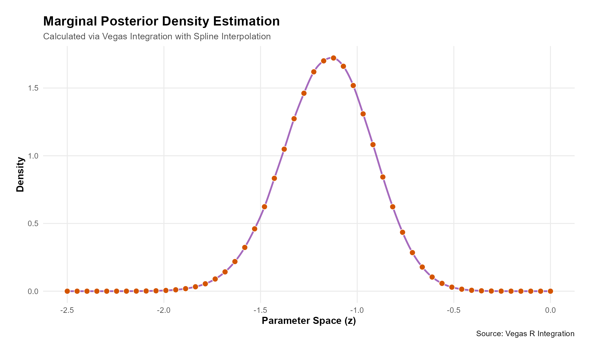

Quickstart
11th-May-update: A first example of how to compute posterior density using vegasr with integrand written as an R function. This will include a comparison with stan (to be completed).
Model Formulation
The model implemented here is a non-centered parameterization (helps improve MCMC sampling) for a logistic model.
When using direct integration via Vegas we don’t need the non-centered parameterization:
Data set
The R chunk below creates a simple dataset of three cols:
- a binary response variable y (0/1 = non-responder/responder),
- a (dummy) basket ID variable (=1)
- a binary treatment variable (0/1 = control/test treatment)
The basket ID is currently set fixed at 1, denoting there is only one basket in this trial, i.e. a classical two arm randomized trial design. Baskets will be added in other vignettes.
thedata<-vegasr:::fn_create_data_1(99999) # a list of y and treat as matrices1. Construct Log Posterior Function
To use direct integration in Vegas the key parts are:
- define the prior density functions
- define the log likelihood + log priors
In addition, we also implement a change of variables to deal with the range of integration going to . This means we integrate over transformed variables (see below) which have finite bounds. As we are changing variables then this requires the usual Jacobian adjustment to the function being integrated to ensure the volume being computed is equivalent to that on the original scale.
To map a variable to we can use the following function and it’s Jacobian (J):
The function below compute_log_lik(theta, y,T) is
necessary to compute the overall standardization constant - the constant
which ensures the posterior density integrates to unity - and the
integration here is over all parameters in the model. We work in log
scale as much as possible and a scaling ``trick’’ is used to help avoid
numerical overflow. These technical numerical details can be found in
the full quarto file.
### Now use VEGAS
library(vegasr)
# now setup python environment
vegas_initialize() # this needed called once per session after library(vegas)
#> successfully initialized vegas version: 6.4.1
result_logEv<-vegasBayesEvidence(f=vegasr:::fn_log_post_1,
lower=c(-1,-1,-1,-1,0.0001,0.0001),
upper=c(1,1,1,1,1,1),
nitn_warm = 10, neval_warm = 10000,
nitn = 10, neval = 10000,
errTol=1,maxIter=10,seed=99999,nsearch=10000,
extra_args=list(
y=thedata$y,treat=thedata$treat,shiftby=0,uselog=1.))
cat("log evidence = ",result_logEv,"\n")
#> log evidence = -129.43182. Find Log Evidence
We use vegas to integrate over the log posterior to get the log evidence, i.e. the standardization constant, that ensures the posterior integrates to unity. Also known as the log marginal likelihood.
mymarg<-vegasBayesPosterior(f=vegasr:::fn_marg_1_1,
lower=c(-1,-1,-1,0.0001,0.0001),
upper=c(1,1,1,1,1),
nitn_warm = 10, neval_warm = 10000,
nitn = 10, neval = 10000,
errTol=1,maxIter=10,seed=99999,nsearch=10000,
log_evidence = result_logEv,
extra_args=list(
y=thedata$y,treat=thedata$treat,shiftby=0,uselog=1.,z=-1.))
cat("Marginal density f(z) at z = -1. = ",mymarg,"\n")
#> Marginal density f(z) at z = -1. = 1.436437
library(foreach)
#> Warning: package 'foreach' was built under R version 4.2.3
library(doParallel)
#> Warning: package 'doParallel' was built under R version 4.2.3
#> Loading required package: iterators
#> Warning: package 'iterators' was built under R version 4.2.3
#> Loading required package: parallel
library(extraDistr)
#> Warning: package 'extraDistr' was built under R version 4.2.3
library(tictoc)
#> Warning: package 'tictoc' was built under R version 4.2.3
cl <- makeCluster(n_cores)
registerDoParallel(cl)
myz<-seq(-2.5,-0.,len=no_den_pts)
tic("Parallel Vegas Loop") # Start timer with a label
f_z<-foreach(z= myz,.packages = c("extraDistr", "vegasr")) %dopar% {
vegasBayesPosterior(f=vegasr:::fn_marg_1_1,
lower=c(-1,-1,-1,0.0001,0.0001),
upper=c(1,1,1,1,1),
nitn_warm = 10, neval_warm = 10000,
nitn = 10, neval = 10000,
errTol=1,maxIter=10,seed=99999,nsearch=10000,
log_evidence = result_logEv,
extra_args=list(
y=thedata$y,treat=thedata$treat,shiftby=0,uselog=1.,z=z))
}
stopCluster(cl)
toc() # Stops timer and prints
#> Parallel Vegas Loop: 70.53 sec elapsed
# 3. Display the plot
# plotting code above in hidden chunk
print(p)